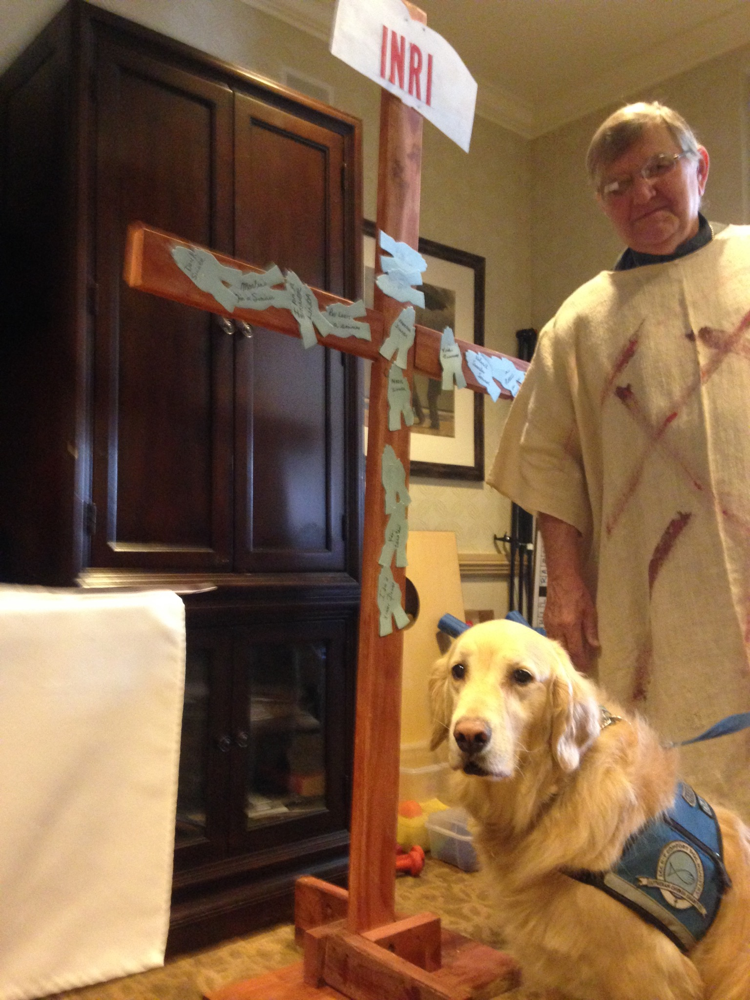

Quick Links
Contents of this page:
- Our Partnering Congregations
- Our Purpose
- Our Witness
- Affiliation
- Our Board of Directors
- Our History
- Comments on Our Services
Our Partnering Congregations
Click on this link to see a list of congregations which support FHP Ministry primarily through providing volunteers to assist with our services. If you would like a representative from FHP Ministries to give a presentation at your congregation, please contact Craig Chidester at 630.710.0396 or cdc33@att.net .
Our Purpose
The mission of Faith, Hope and Peace Ministries is “Bringing the Church to the unwillingly absent in residential care facilities”. The opportunity for residents to gather and worship reconnects them with the body of Christ. It provides them the chance to have fellowship and connect with other Christians.
The vision of Faith, Hope & Peace Ministries is to facilitate cooperation among Lutheran Church congregations in providing weekly, Biblical ministry to everyone in residential care facilities.
Our Witness
We will be serving those that want to stay connected to the body of Christ, but there are significant numbers of residents that are not believers in Jesus Christ. This is the mission field that FHP will purposely pursue. FHP not only communicates with the residents that attend services but also communicates with all residents and employees of the residential home. Many of the un-churched residents are in a position that makes them prime candidates for us to reach with the Gospel. Time is of the essence for many reasons in the homes in bringing the Gospel to unbelievers.
Affiliation
Faith Hope and Peace Ministries is a Recognized Service Organization (RSO) of The Lutheran Church–Missouri Synod (LCMS). This designation was
received on Sept 22, 2016. By awarding RSO status, the LCMS recognizes that
the programs of FHP Ministries are in harmony with LCMS doctrine and
practice. For more information on RSO status, please visit http://www.lcms.org/rso.
Our Board of Directors
The Board of Directors that currently leads Faith, Hope and Peace Ministries are:
- Craig D. Chidester – President, Westmont, IL
- The Reverend Mark W. Birkholz – Secretary, Oak Lawn, IL
- The Reverend Jared Eggebraaten – Board Member, Naperville, IL
- Mrs. Judy Latman – Board Member, Westmont, IL
- Mrs. Donna Perkowski – Treasurer, Western Springs, IL
Our History
This ministry had humble beginnings as Three Friars Lutheran Mission Society. Betty Baker, a member of Faith Lutheran Church – Oak Lawn, IL, requested that Pastor Matt Gunia, Trinity Lutheran Church – Burr Ridge, IL (now serving Faith Lutheran Church – Westchester, IL), come to her residential facility (Emeritus, Burr Ridge – previously Brighton Gardens) and lead a regular worship service. Pastor Gunia contacted Pastor Mark Birkholz, Betty’s pastor, to see if they were willing to take turns leading the worship. The first service was conducted on September 2, 2009 with 16 residents in attendance. The 2009 Christmas Eve service at this facility produced a turnout of 82 worshipers representing four generations. Craig Chidester, a member at Grace Lutheran Church – Western Springs, IL agreed to volunteer to help organize the services. Besides arranging for a pastor to conduct the service, Craig also secures a volunteer to help organize and transport the residents and an organist to provide worship music.

Comments on Our Services
Upon the passing of a Brookdale Burr Ridge resident…
“It is with heartfelt sadness that I inform you of my mother’s death in November 2016. She always looked forward to your weekly church services. They were so inspiring and comforting to her. You were great friends to my mother over the years and I know she loved you very much..”
– Pat Johnson
“I want to put a huge thank you out to the ladies of Grace Western Springs for all the extra “stuff” they do for FHP!! I’m not sure who made the palm crosses, but I have a feeling it was this bunch again…..please pass this on to whoever helps with the lunches and all the other things for FHP!!! Have a blessed Easter everyone!”
– FHP Hostess at British Home
“Thank you for coming to Mayslake Village each Wednesday to nourish us in our faith and for love and many prayers.”
– Resident of Mayslake
“Thank you for everything you’ve done for our residents over the years. We are so grateful for your services.”
– Facility Administrator
“Thank you for all that you do for us! Our residents truly appreciate your time and commitment.”
– Friends at Sunrise Fountain Square
“I attend the weekly church services and truly enjoy the sermons; they give me a lot of faith in my life.”
– Resident of Fountain Square Lombard
“Just wanted to thank you for all you do. Everyone involved in this ministry is a blessing. Thank you to all the FHP Ministry Members your fellowship has been a blessing to our community and we are sure it will continue to grow here.”
– Facility Administrator at Cantata
“Thank you for all you do for the residents at Alden Estates.”
– Resident of Alden Estates
“I have enjoyed the services every Thursday you have had so far. You have had God in our Sunrise home every week.”
– Resident of Sunrise in Glen Ellyn
“Thank you for holding a Christmas Day service for our residents. They really enjoyed the service and the singing! Thank you for your kindness.”
– Staff at Burgess Square
“I heard the pastor’s sermon on Christmas Day. It brought tears of hope and contentment as he shared the words of our Lord that day. I’m there day to day to share the love of God by listening, praying, helping … With that one sermon, he brought most of the younger residents to tears when he reminded them that being home for Christmas is having a quiet chamber in your heart for God! How grateful we are…”
– Staff member at Bria of Westmont
“Thank you for all you do…. you are much appreciated!”
– Activity Director at Atria Park in Glen Ellyn
“Thank you so much for your ministry at the British Home (Cantata). Our mother attended your church services faithfully. She was able to attend the Christmas Eve service (2015) with her grandchildren, who she dearly loved. It meant a great deal to her. God’s Blessings in your ministry!”
– Family Members of a Resident at Cantata